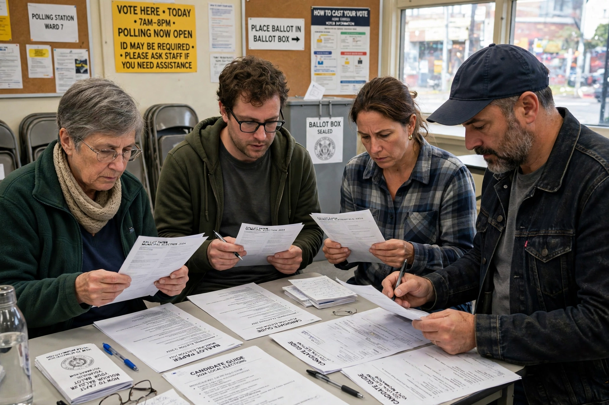

Electoral reform is the process of introducing new electoral systems or changing existing ones, and more broadly of changing the rules governing elections: who may vote, how votes are cast and counted, how districts are drawn, how campaigns are financed, and how elected bodies are composed.
The most debated form of electoral reform is a change in the voting system itself: for example, replacing first-past-the-post (plurality in single-member districts) with a form of proportional representation, the single transferable vote, or a majoritarian system such as the two-round system or instant-runoff voting. New Zealand's 1993 referendum adopting mixed-member proportional representation and the United Kingdom's 2011 referendum rejecting the alternative vote are prominent examples.
Historically, many reforms extended the franchise: the British Reform Acts of the nineteenth and twentieth centuries progressively widened the electorate, and the Voting Rights Act of 1965 in the United States enforced African-American voting rights in the South. Debates continue over voting age, prisoner voting and registration requirements.
Reform may target gerrymandering — the manipulation of electoral district boundaries for partisan advantage — by transferring boundary-drawing to independent commissions.
Other common subjects include campaign finance regulation, term limits, ballot access for independent candidates, compulsory voting, election administration, and the design of electoral management bodies.
Electoral reform is usually advanced by a mixture of political parties, pressure groups such as FairVote in the United States and the Electoral Reform Society in Britain, citizen assemblies, and referendums. Incumbent parties, which benefit from existing rules, are often resistant, and constitutional entrenchment can make change difficult.